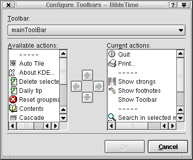
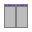

La barra degli strumenti della finestra principale è configurabile, lo puoi fare tramite la voce "Configura barra degli strumenti" nel menu "Impostazioni"..

Ogni bottone ha una descrizione che indica la sua funzione. I bottoni senza immagine possono apparire vuoti.
 Chiude Bibletime.
Chiude Bibletime.
 Stampa gli elementi nella coda di stampa.
Stampa gli elementi nella coda di stampa.
 Mostra / Nasconde i numeri di Strong.
Mostra / Nasconde i numeri di Strong.
 Mostra / Nasconde note a pié di pagina.
Mostra / Nasconde note a pié di pagina.
 Cerca nei moduli selezionati.
Cerca nei moduli selezionati.
 Sovrappone le finestre dei documenti.
Sovrappone le finestre dei documenti.
 Sovrapposizione automatica delle finestre dei documenti.
Sovrapposizione automatica delle finestre dei documenti.
 Affianca le finestre dei documenti.
 Affiancamento automatico delle finestre dei documenti.
Affiancamento automatico delle finestre dei documenti.
 Chiude tutte le finestre dei documenti.
Chiude tutte le finestre dei documenti.